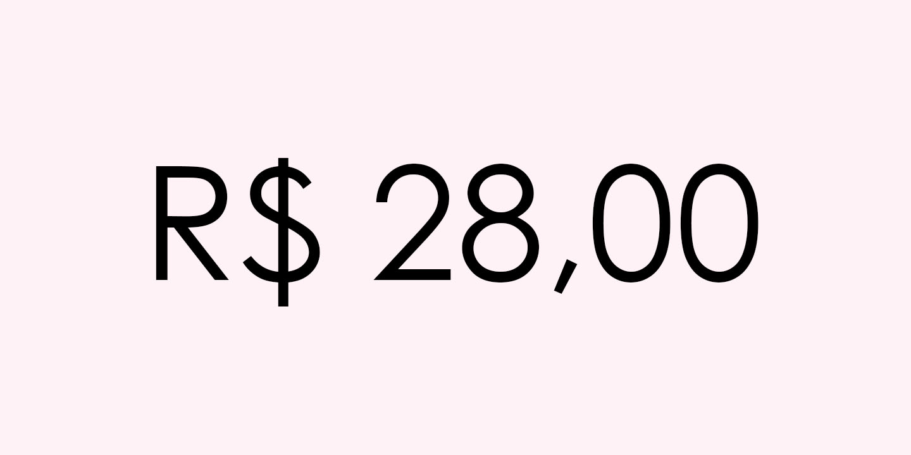
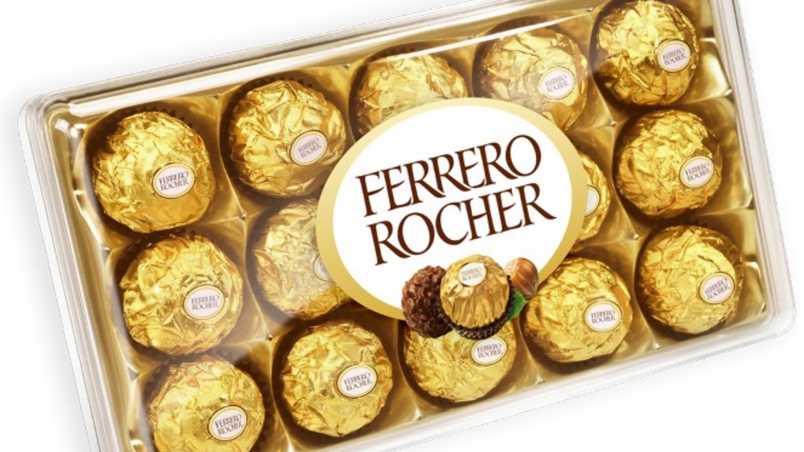
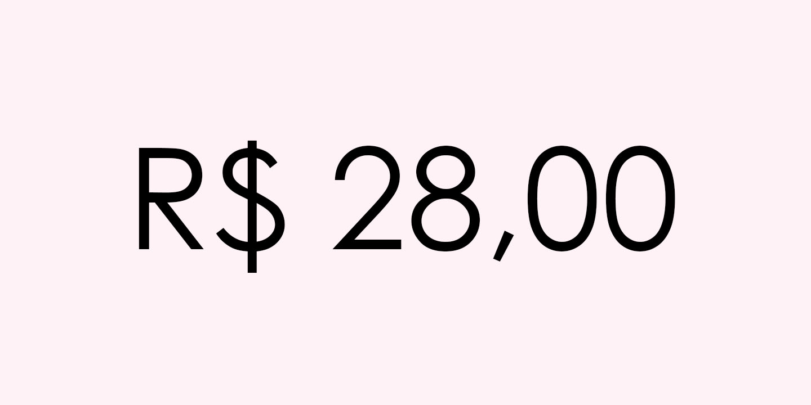

|  |
|

|
| ◄ | ► |
| Ferrero Rocher é uma marca de bombom de chocolate fabricado e comercializado pelo grupo italiano Ferrero. Tem origem italiana criado em 1946, com intuito de fazer um chocolate diferente dos outros, refinado. É constituído de uma avelã inteira recheada de chocolate, envolvida por wafers e coberta de chocolate com pitadas de avelã. Cada bombom possui cerca de 72 calorias e são embalados tradicionalmente um a um e colocados numa caixa dourada. |